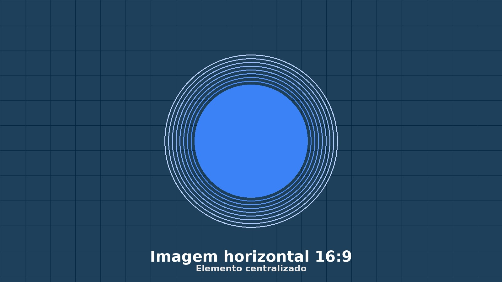
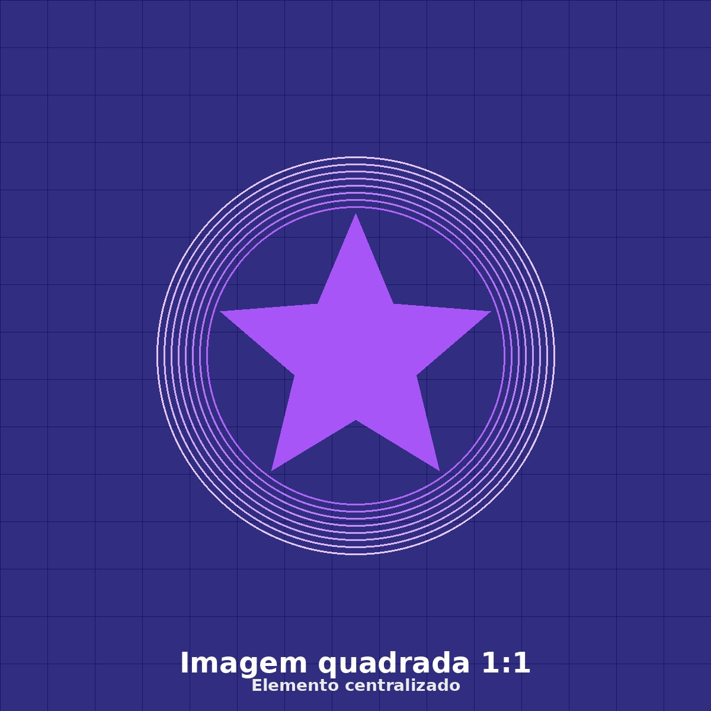
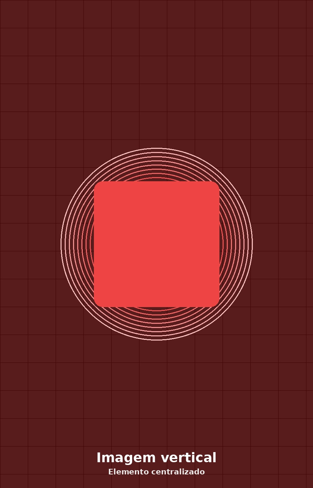

Neste arquivo, veremos como uma imagem pode diminuir ou aumentar conforme o tamanho da tela, mantendo sua proporção e preservando um elemento interno centralizado.
Aqui usamos uma imagem que ocupa toda a largura da tela. Mesmo que o body tenha padding, o container da imagem compensa esse espaço usando calc() e margens negativas.

Neste exemplo, a moldura tem altura fixa. A imagem preenche todo o espaço usando object-fit: cover. O elemento interno continua centralizado porque usamos object-position: center.

Agora usamos uma imagem vertical dentro de uma moldura que muda de tamanho. Mesmo com cortes laterais ou superiores, o centro continua sendo priorizado.
